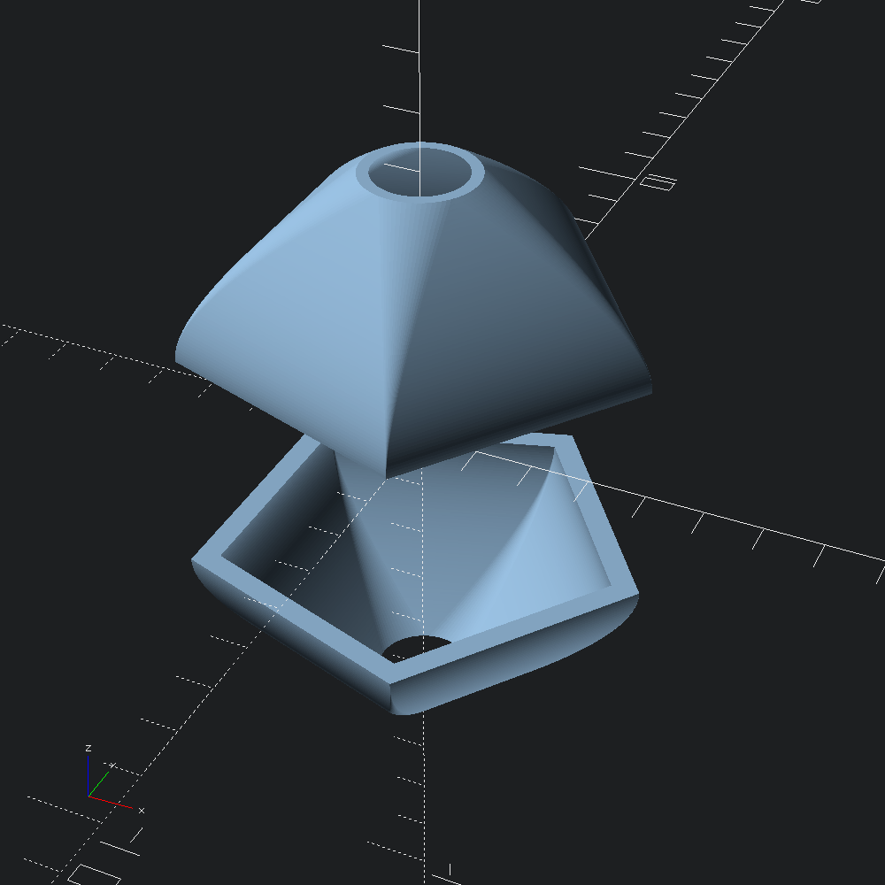
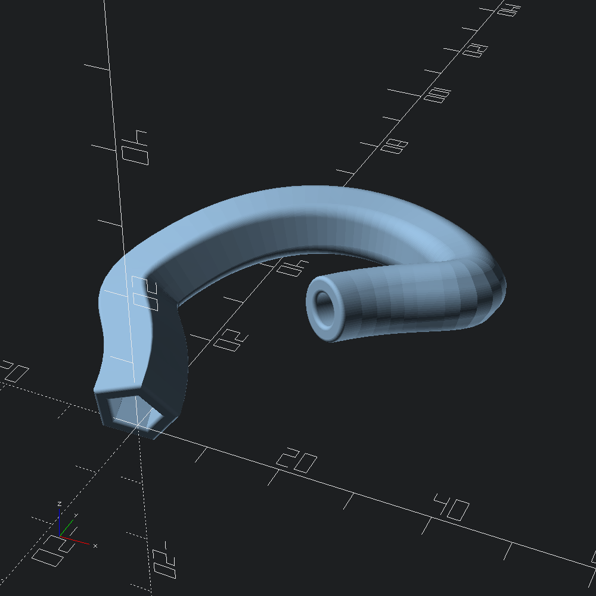

open Scad_ml
let () =
let test_union s = Scad.union [ s; Scad.(translate (v3 4. 0. 0.) @@ sphere 1.) ] in
Mesh.linear_morph
~refine:2
~ez:(v2 0.42 0., v2 1. 1.)
~slices:60
~outer_map:`Tangent
~height:3.
(Poly2.ring ~fn:5 ~thickness:(v2 1. 1.) (v2 4. 4.))
(Poly2.ring ~fn:80 ~thickness:(v2 0.2 0.2) (v2 1. 1.))
|> Mesh.to_scad
|> test_union
|> Scad.to_file "eased_morph.scad"
let () =
let test_union s = Scad.union [ s; Scad.sphere 2.5 ] in
let path =
let control =
Vec3.[ v 0. 0. 2.; v 0. 20. 20.; v 40. 20. 10.; v 30. 0. 10. ]
|> Path3.quaternion (Quaternion.make (v3 1. 1. 0.) (Float.pi /. -5.))
in
Bezier3.curve ~fn:60 @@ Bezier3.of_path ~size:(`FlatRel 0.3) control
and caps =
Mesh.Cap.
{ bot = round ~holes:`Same @@ chamf ~height:(-1.2) ~angle:(Float.pi /. 8.) ()
; top = round @@ circ (`Radius 0.5)
}
and a = Poly2.ring ~fn:5 ~thickness:(v2 2.5 2.5) (v2 6. 6.)
and b = Poly2.ring ~fn:80 ~thickness:(v2 2. 2.) (v2 4. 4.) in
Mesh.path_morph ~refine:2 ~caps ~path ~outer_map:`Tangent a b
|> Mesh.to_scad
|> test_union
|> Scad.to_file "tangent_morph_sweep.scad"